Managing Symposia
Everything you need once symposia are coming in: reading the table, editing a symposium, and deleting, restoring or withdrawing one.
This guide is for event administrators. It helps to be familiar with the tables function first, since the symposium table behaves the same way.
The symposium table#
Go to Event dashboard → Symposium → Submissions → Table**.
Click the Columns dropdown at the top right to choose what you see. The main table columns are grouped into Symposium data and Symposium responses; the accordion tables hold details of the submissions attached to each symposium.
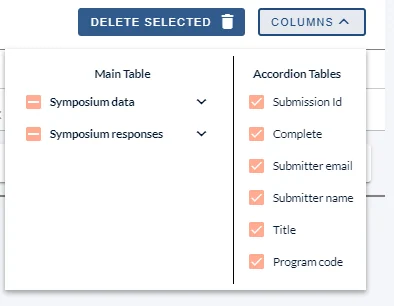
Within Symposium data there is a column listing the IDs of the submissions attached to each symposium.
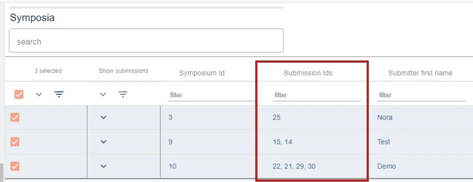
To see attached submissions as rows, click the top arrow under Show submissions to expand them all, or expand them one at a time. They filter just like the parent rows.
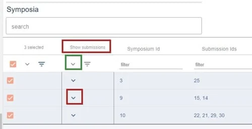
Edit a symposium#
As an admin you can edit any part of a user's symposium, including which submissions are attached.
From Event dashboard → Symposium → Submissions → Table**, click the row you want to edit.
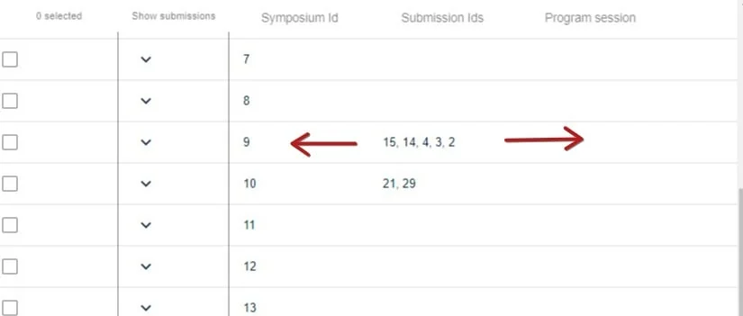
You will see four tabs:
- The completed symposium form — edit it as you would an abstract submission.
- Attach submissions — see below.
- Submissions — the full text of everything attached.
- Reviews — see Symposia reviewing.
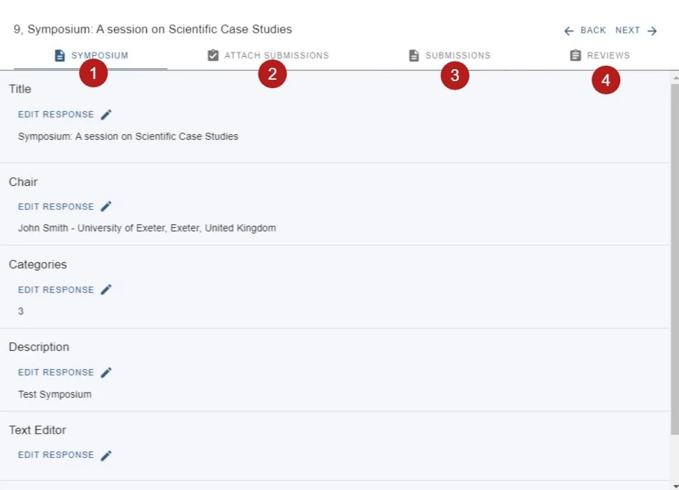
Attaching and removing submissions#
On the Attach submissions tab, the upper half shows what is already attached. You can drag and drop to reorder, click to view a submission in abstract book form, or remove it from the symposium. Removing does not delete the submission from your event — only from this symposium.
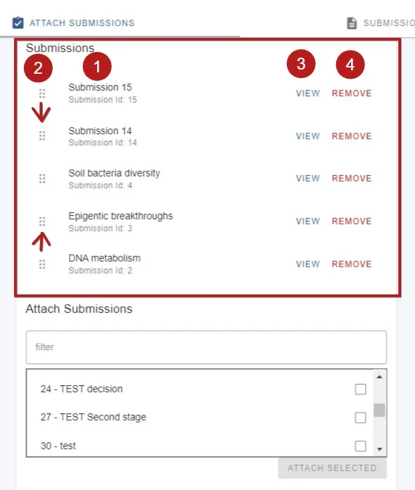
The lower half is where you add more. Filter by submission ID or title, tick your choices, and click Attach. They appear in the list above.
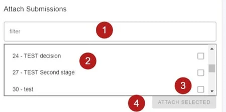
If your permissions allow it, you can also invite users to attach abstracts.
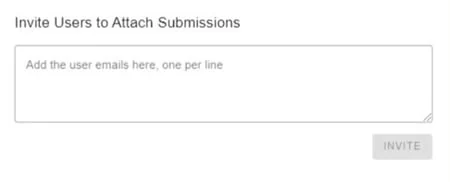
All changes save automatically.
Delete, restore or withdraw#
Withdrawing is not the same as deleting: a withdrawn symposium stays in the submission and review tables, with its outcome recorded.
To delete, go to Event dashboard → Symposium → Submissions → Table, tick the symposia you want and click Delete selected. They move to the Deleted** table.
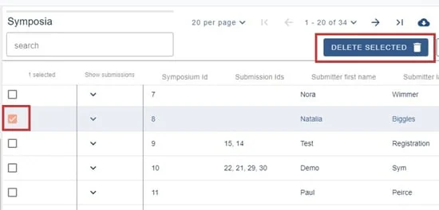
To restore, go to Event dashboard → Symposium → Symposia → Deleted, tick the ones you want and click Restore selected. They return to the Active** table.
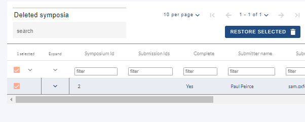
To withdraw, go to Event dashboard → Symposium → Symposia decisions and make sure the Decision column is showing, under Decision responses**.
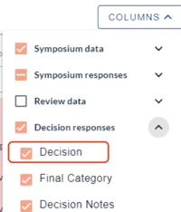
Then click the dropdown in the relevant row of the Decision column and choose Withdrawn.
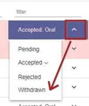
Did this page solve it?
Thanks — this helps us fix it.
Didn't solve it? Ask our support team
No question is too small, and there's no charge for asking. Raise a ticket and someone who knows the software will pick it up.